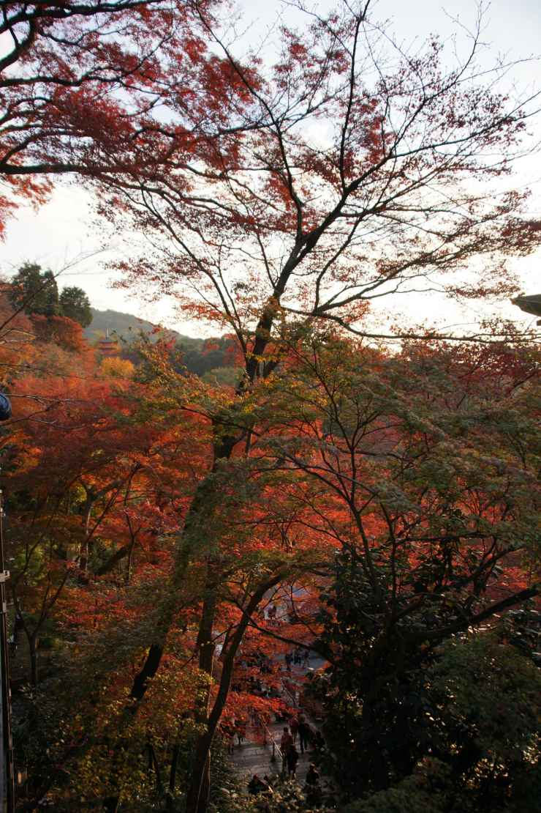
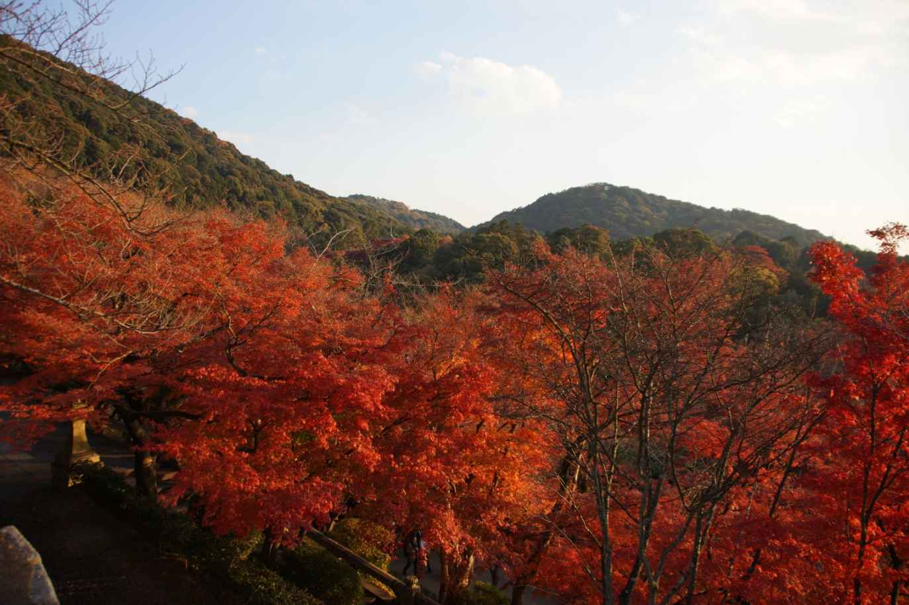
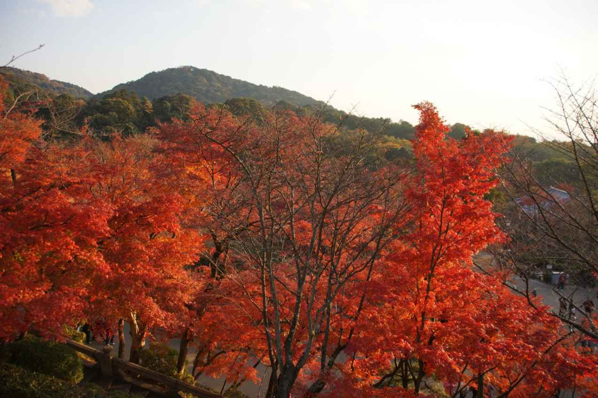

| The Time of Civilization Kiyomizudera in the evening　2013/12/1 | |
| kenji, akutagawa | |
| jyovanni godokaisha (2013) | |

Readers of the author should know that the author is, there is something in the Kiyomizu Temple, and was writing for free on his blog.
Akutagawa go to Kiyomizu Temple 50 times a year.
As we publish a photo book of this time , we , It tried to re- check the Wikipedia Kiyomizu Temple .
In the temple of the system ( one of six sect Nanto ) Justice sect , Koryuji , with Kurama Temple , with a history from the Heian capital relocation before , and was surprised indeed , " Kiyomizu Temple also . , Which is one of the few temples in Kyoto , This is because It read the description , such as the sequence Ishiyama ( Otsu, Shiga Prefecture ), Hase-dera ( Sakurai City, Nara Prefecture )and "which is one of the most hallowed ground Kannon in Japan .
That Akutagawa loves very Hasedera and Ishiyama, should all know people in the same way with us, there is that you have to talk to him.
We, Akutagawa, It thought as soon as he has been Treasury of the True Dharma Eye to Guanyin Bodhisattva large.
It is the time when a visit to Kiyomizu-dera with Akutagawa riding a taxi from Kyoto Station.
The driver he said, " and to be close from Kyoto Station , Kiyomizu Temple , and is the best in Kyoto visit the number of tourists , attractions is because are clustered in the peripheral ," but , it would follow that indeed consent is also did .
"Best of the Golden Pavilion, such as it is, of course, in the vicinity, because there is no accumulation of attractions around about Kiyomizu Temple, travelers who do not have time, especially towards the Kiyomizu Temple"
Well, from the time you order a monument honoring More and Aterui at Kiyomizu Temple, Akutagawa, Sakanouenotamuramaro (758 years - 811 years) and Kiyomizu Temple and it became not go hand in hand.
Always, it was one of the reasons why he feels that something is, there is also the Kiyomizu-dera it.
Then, it was that when the stage of Kiyomizu Temple is a national treasure, I have heard together a description of the guide, which has been guiding the students' school trip. I had blogged that when she offered this explanation as below Koyasu tower to see right in front.
It was thinking, "Oh, I see." And in the description of the guide's, it was because I talked to the mountain behind the Koyasu tower to see the front of the stage, Hideyoshi that are enshrined.
When Hideyoshi died , in order to keep the peace of the world , to enshrine to hide , so to speak , the body that mountain , for a while , It was face down its death . The guide was it says.
Then it is today.
For Koyasu tower, we are knew the further description.
It travels with the children of three of Imawaka · Otuwaka · Ushiwaka, during a snowstorm , when she escape the Kyoto , Tokiwa is the mother of Ushiwakamaru is , and prayed the safety of children in Senju Koyasu Kannon .
After a prayer, Tokiwa they will aim to Uda County (Udanogoori) Yamato that there is a relative.
In addition, it is known for the first time also auspicious first place of this Koyasu tower.
(Akutagawa, in the viewer first,it is of man is that it does not get into the subject from the description in many cases )
Emperor Shomu - Komyokogo is this prayer to Kannon, since it was an easy delivery the Empress Kōken in the temple transfer, and it was built for that gratitude. Posterity, I be exalted and Koyasu Kannon faith easy delivery of prayer is born.
In addition , when the ferocious heavy rain of typhoon No. 18 recently , cliff in front of the Koyasu Tower is lost , it is also found the description of it was a close call .
Again and what was that kind of thing , of repair currently under construction , that blue sheet , was as soon as you relieved that they were safe .
Kiyomizudera, we are praying that you are forever.
As you pray me peace of us to be forever, I'm praying that you there forever us.
We will love you dearly.
We are convinced that Akutagawa is best "the photographer who takes Kyoto" " Akutagawa is the best in the world if making take Kyoto " in the world now.
Kyoto is Akutagawa Kenji's 2nd hometown.
Akutagawa was born in Sendai.
Akutagawa who advanced towards the 1st preparatory school for higher education northeast was ordered as follows from one of the former teachers.
"You are left in the university and must support Kyoto University with the both shoulders" Surely, be more than one deserves was glorious.
However, as for the reader, Akutagawa as you know chose the road of the trial.
In the season of the colored leaves about 7 years before, Akutagawa re- discovered Kyoto.
Since then, he visited Kyoto every weekend and continued to take a photograph.
It doesn't learn and it doesn't use the technique of the camera absolutely.
Akutagawa who has trust them completely to the technology of the camera manufacturer (but being SONY in case of Akutagawa) in Japan continued to practice "there is beauty in an instant ".
It passed to the companion for 3 months and he accomplished an objection oneself only 3 years before in the economy of Kansai union, Kansai Association of Corporate Executives, the Osaka-shi government office to the conduct by which a Oosaka person concerning the land like diamond in front of Oosaka station was amazed.
Why isn't it made in the as planned in the business by which it is possible to be written in 20, it gathered and completed the wisdom of the officials and the people in Oosaka?
(For the details, look at Akutagawa's blog.)
It thought that it pardoned really already when suggesting, saying it made a soccer stadium and let's attract World Cup, and so on.
It thought that it wrote a blog then and that it had no choice but to make a remark on the net.
However, Akutagawa who didn't know of course at all was aimed at by the prey on devil in Osaka which appeared in front of Akutagawa, seeing this blog and the things such as antisocial organizations and human beings' concentrating actually to the world of SNS encountered terrible eyes.
This regret and the rage were the stress, becoming a maximum rage in Akutagawa's life, and the serious illness about fate was ill for Akutagawa and he was hospitalized for 7 months, too.
It, too, would have been chance, but Akutagawa depended on the doctors who come from Kyoto University medical school and could leave hospital.
Since then, he combines rehabilitation and almost every day, he visits Kyoto.
In other words, now, Kyoto becomes Akutagawa's blood and becomes flesh.
Now, all over the world, the person who visits a yard in Kyoto and the place which represents Kyoto carries without being as Akutagawa.
It stayed overnight at the inn which is in the entrance at the temple for Ken Domon who was a famous photographer to fall into Muro-ji and to take the five-storied pagoda of snow and it continued to take a photograph in the flagrant story.
Now, Akutagawa loves Kyoto, Nara, and Shiga above Ken Domon and continues to take Kyoto, Nara, and Shiga.
If seeing the photograph collection of him whom we continue to publish, it is convinced that the reason why we think that those photographs of his are the best in the world is obvious.
For example, his photograph is being told by that Akutagawa who loves Kyoto is a loved human being all over the world most in Kyoto than anyone, too.
Kyoto is answering Akutagawa's love beyond the imagining of us.
Please, appreciate the quintessence of his photograph.
Hard when you are salty, Akutagawa's photograph and sentences should surely spread through you.





